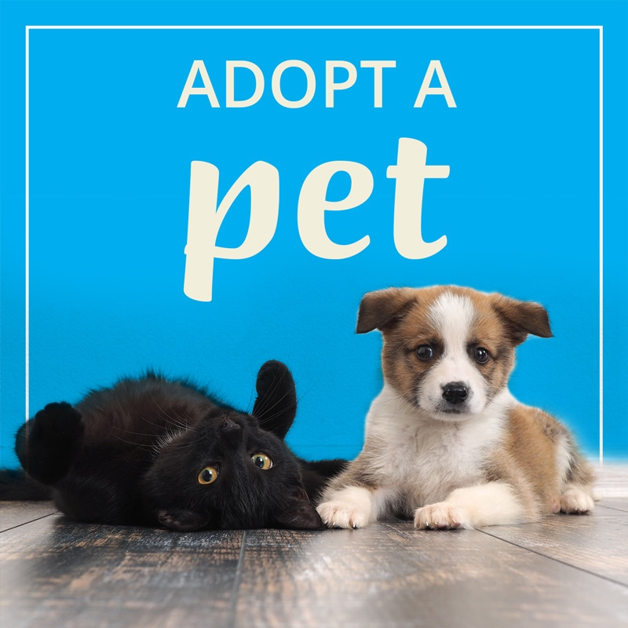

Together with millions of supporters, People to Animals takes on puppy mills, factory farms, the fur trade, trophy hunting, animal cosmetics testing and other cruel industries. Through our rescue, response and sanctuary work, as well as other hands-on animal care services, we help thousands of animals every year. We fight all forms of animal cruelty to achieve the humane care and treatment of all animals. Our rescue and direct care work responds to today’s cruelties; our education, legislative and policy work prevents tomorrow’s.
We work to end the cruelty practices toward all animals by helping vulnerable animals and keeping pets in safe and loving homes requires a commitment from all of us—advocates, pet owners, shelters, leaders, and entire communities. When we work together under a common cause, we’re both saving lives and elevating our society and its laws to ensure cruelty victims and other at-risk animals receive the protection and care they deserve.
Our organization was founded on the belief that animals are entitled to kind and respectful treatment at the hands of humans and must be protected under the law. We have:
With a history spanning over 100 years, People to Animals has achieved so much for animal rights.By bringing the issue to public attention with our dynamic and determined approach, we have inspired generations of politicians, decision-makers and compassionate people to make a difference for animals used in experiments. As the problem has grown, we have stepped up to meet the challenge across the world, placing the issue on the global agenda for the first time. We have saved millions of animals from a life of cruelty practices, and together we can do so much more.
You can do your part by adopting and caring for a loveable and homeless animal today!
